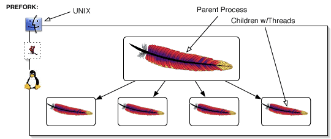
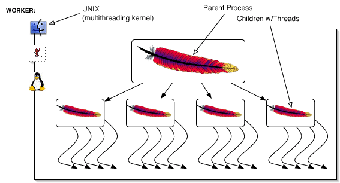
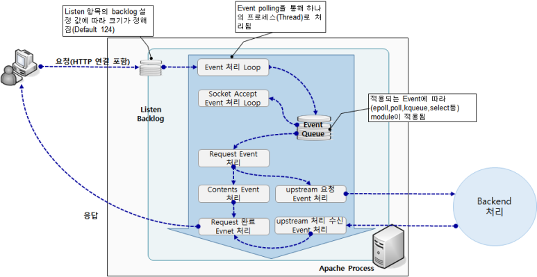
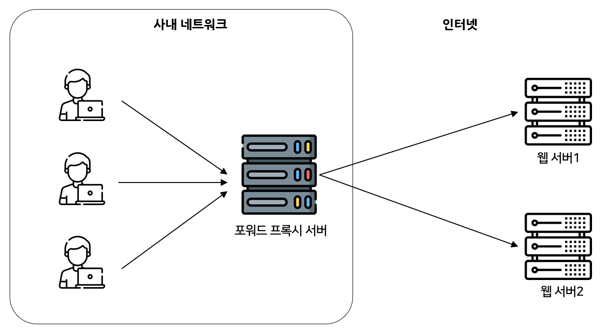
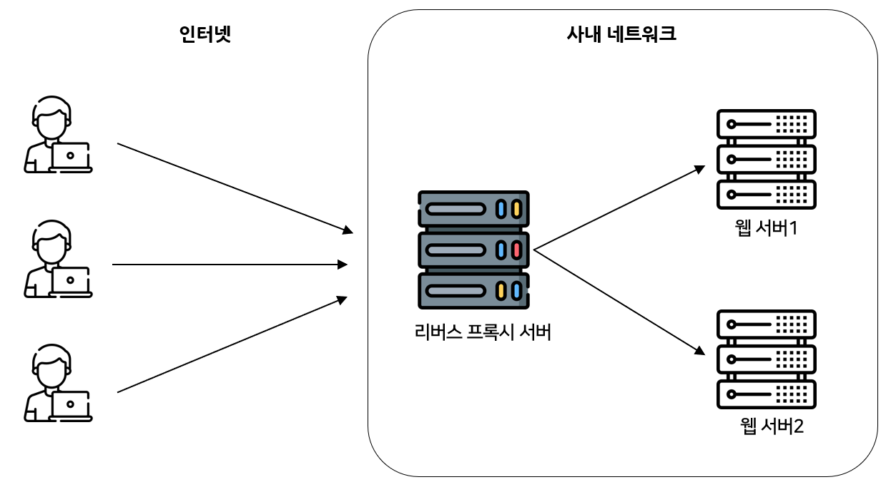
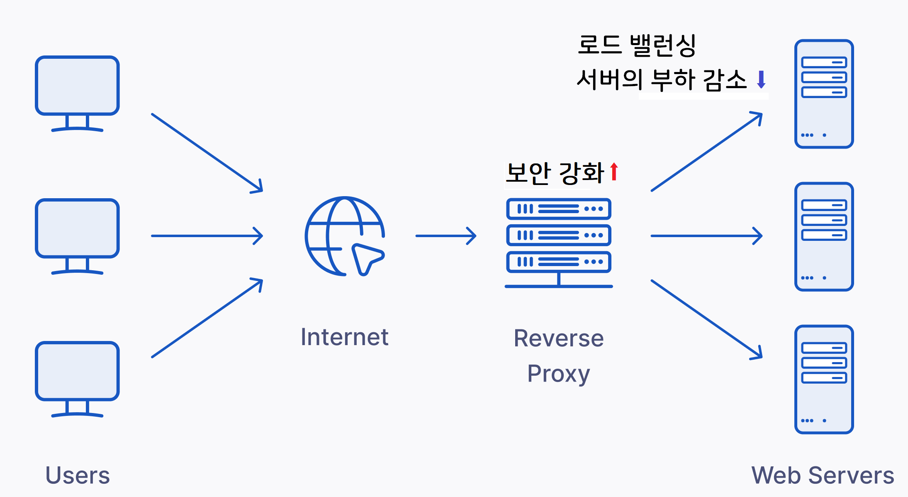
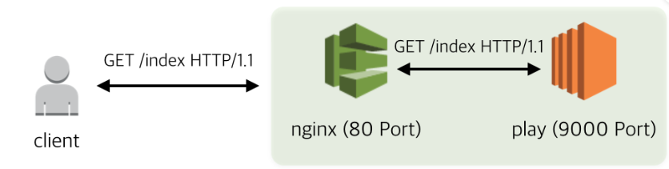
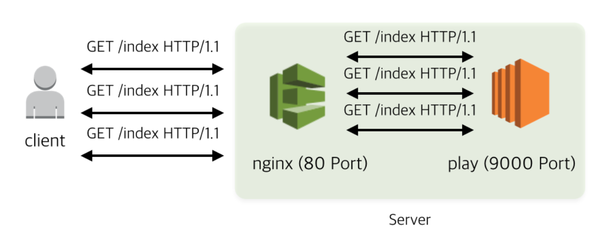

웹 서버 이해와 도커로 웹 서부 구축하기
각각의 서비스를 도커 컨테이너로 실행하고, 그 전체를 도커 컴포즈로 구성해서 실행하기 위해서는 기본적으로 웹 서버에 대해서 상세하기 이해할 필요가 있습니다.
Apache MPM
MPM은 다중처리 모듈(Multi Processing Module)의 약자로, 클라이언트로 받은 요청을 어떤 방식으로 처리할 것인지에 대한 모듈을 말합니다.
아파치에서 가장 대중적으로 사용하는 MPM은 크게 3가지가 있습니다.
Prefork
Worker
Event
Prefork

하나의 요청에 대해서 하나의 자식 프로세스가 하나의 스레드를 사용해서 처리하는 방식
미리 복수의 프로세스를 생성하여 클라이언트의 요청에 대비하는 멀티프로세스 방식이다.
하나의 요청에 대해서 하나의 자식 프로세스가 하나의 스레드를 사용해서 처리하는 방식이다. 동시에 여러개의 요청이 들어올 경우, 미리 생성되어 있는 자식 프로세스에서 각 요청을 처리한다.
각 프로세스들의 자원이 독립적이기 때문에(프로세스 복제시 메모리 영역까지 복제), 다른 요청이 들어오거나 프로세스 하나에 오류가 발생해도 다른 요청에 영향이 가지 않는다.
하지만 프로세스가 많아질 경우, 메모리가 많이 소비된다.
Worker

멀티쓰레드와 멀티프로세스의 하이브리드형 박식으로, 각 요청을 프로세스의 스레드로 받아 처리한다.
연결마다 같은 메모리 공간을 공유하기 때문에 경합이 발생할 수 있고 이에 따른 주의가 필요하다.
프로세스 별 스레드 개수 제한까지 요청을 받으며, 일정 개수가 넘어갈 때는 프로세스를 생성하여 처리한다.
prefork에 비해 메모리 등 리소스 사용량이 비교적 적다.
하지만 프로세스 오류가 발생할 때 프로세스 내 스레드까지 죽어버리므로, 여러 연결이 동시에 끊어질 수 있다.
통신량이 많은 대규모 환경에 적합하다.
root@44297c0c4e1e:/usr/local/apache2/conf/original/extra# vi httpd-mpm.conf 에서 확인가능
명령어로 확인해보면 최신 아파치는 event MPM을 사용한다는 것을 확인할 수 있습니다.
Event
Worker 방식을 기반으로 멀티쓰레드와 멀티프로세스로 동작한다. 클라이언트로부터 데이터를 기다리도록 유지되는 단점을 보완하기 위해 각 프로세스에 대한 전용 리스너 스레드를 사용하여 Listening 소켓, Keep Alive 상태에 있는 모든 소켓, 처리기 및 프로토콜 필터가 작업을 수행한 소켓 및 나머지 유일한 소켓을 처리한다.
기존에는 클라이언트의 연결이 완전히 끝나지 않는 한 하나의 프로세스(또는 스레드)를 계속 연결하고 있었다.(리소스 부하) 따라서 대량 접속이 발생하는 경우 효율이 굉장히 떨어지는 이슈가 있었다.
Event Driven 지원 (한개 또는 고정된 프로세스만 생성하고 그 프로세스의 내부에서 비동기 방식으로 효율적으로 작업을 처리하는 방식으로, 속도가 가장 빠르다.)
클라이언트 요청을 받는 스레드를 따로 두어, 분산된 처리를 한다.
Nginx

요청 > Request Queue 에 저장 (Event Loop) -> 처리(비동기)
Nginx와 Apache
Nginx와 Backend 지연 처리 분석
피케이의 Nginx
피케이의 Nginx 정리 파일
Nginx 비교분석
Nginx는 간단하게 설명하면 쿠버네티스와 구조가 유사합니다.
마스터 프로세스와 워커 프로세스로 구성되어있습니다. 마스터 프로스세는 설정 파일을 동적으로 읽어 워커 프로세스를 관리합니다. 워커 프로세스는 실제로 웹 요청을 처리하는 프로세스로 Apache와 다르게 모든 작업을 event로 여기고 처리합니다.
작업 큐에 이벤트를 넣어 처리를 하며 오래 걸리는 디스크 I/O 작업은 별도의 쓰레드 풀에 넣어서 작업을 위임합니다.
성능을 중시하는 Nginx는 아파치와 다르게 개발자가 모듈을 추가하기 어려우며 워커 프로세스도 CPU의 코어 수와 동일하게 실행하여 컨택스트 스위칭을 최적화했습니다.
정리하면 Nginx는 대용량 트래픽에 적합하고, Apache는 OS 안정성,다양한 모듈 지원,디렉토리별 추가 구성이 가능하기 때문에 필요한걸 선택해서 사용하면 되지만, 성능 차이는 크게 나지 않는다고 합니다.
아파치와 Nginx는 목적이 다른 웹서버이기 때문에 목적에 맞게 사용하는 방법을 아는 것도 중요하다고 생각합니다.
기본 사용법
기본 베이스로 우분투 리눅스:20.04 버전을 설치합니다.
이제 우분투로 들어가서 Nginx를 설치합니다.
apt-get update는 운영체제에서 사용 가능한 패키지들과 그 버전에 대한 정보를 업데이트하는 명령어입니다. 설치되어 있는 패키지를 최신으로 업데이트하는 것이 아닌 설치 가능한 리스트를 업데이트하는 것
Ubuntu 및 Debian Linux에서 패키지의 설치 상태와 후보 버전 정보를 표시하는 데 사용됩니다. 이 명령은 다음과 같은 정보를 제공합니다:
Installed: 현재 시스템에 설치된 패키지 버전.
Candidate: 사용 가능한 패키지 버전.
Version table: 사용 가능한 패키지 버전과 해당 버전의 소스 저장소 정보. 예를 들어, 아래와 같은 출력이 나타날 수 있습니다:
버전 테이블에서 원하는 버전의 Nginx를 설치합니다.
그러면 이렇게 웹 서버의 시간을 설정하는 CLI가 나옵니다.
6번 69번을 눌러서 서울로 선택하면 됩니다.
http 블럭에서 설정할 수 있는 모든 설정 공식사이트
http 블록에서 설정할 수 있는 것을 1번,2번 폴더에 별도로 각각 기능별이나 사이트 별로 설정파일로 만들고 해당 폴더에 넣으면 모두 읽어서 적용할 수 있습니다.
/etc/nginx/sites-enabled로 이동하고 default파일을 확인할 수 있습니다.
이렇게 기본 웹 서버에 대한 기본 설정을 확인할 수 있습니다.
심볼릭 링크가 되어있는데 다시 구조를 확인해보면
Nginx 웹서버가 참고하는 http블럭내 참조하는 설정 디렉토리는 3가지 입니다.
Nginx에서 sites-available 폴더와 sites-enabled 폴더를 사용하는 이유는 가상 호스팅(Virtual Hosting) 을 효율적으로 관리하기 위함입니다.
sites-available: 이 폴더는 비활성화된 사이트들의 설정 파일들을 저장하는 곳입니다. 즉, 아직 활성화되지 않은 가상 호스팅 설정 파일들이 위치합니다.
sites-enabled: 이 폴더는 활성화된 사이트들의 설정 파일들을 저장하는 곳입니다. 실제로 웹 서버에서 사용 중인 가상 호스팅 설정 파일들이 이 폴더에 있습니다.
이렇게 나누어 관리하는 이유는 다음과 같습니다:
모듈화와 유연성:
sites-available폴더에는 모든 설정 파일을 미리 준비해두고, 필요한 사이트만 심볼릭 링크로 활성화할 수 있습니다. 이렇게 하면 설정 파일을 모듈화하여 관리할 수 있고, 필요한 사이트를 쉽게 활성화/비활성화할 수 있습니다.가독성과 정리:
sites-enabled폴더에는 현재 활성화된 사이트들만 있으므로, 설정 파일을 보다 간결하게 관리할 수 있습니다. 또한 가상 호스팅 설정 파일들이 분리되어 있어 가독성이 좋아집니다. 이렇게 나누어진 폴더 구조는 웹 서버 설정을 더욱 체계적으로 관리하고, 가상 호스팅을 효율적으로 구성할 수 있도록 도와줍니다.
출처 : 왜 나누었을까?
default 파일 server 설정
8080 포트를 사용하도록 변경합니다.
server_name_은 요청을 받을 도메인이름을 설정합니다.
예를 들어:
만약 서버네임이 없다면 이렇게 디폴드인 server_name _;으로 설정해도 됩니다.
root: 기본적인 ip:port를 입력했을때 찾는 기본 디렉토리 위치indexindex.html index.htm index.nginx-debian.html 파일명을 순차로 찾아서 반환한다는 의미입니다.
location
위 주소로 입력할 경우 / 이후부터가 location /에 해당하게 됩니다.
먼저 try_files에서 $url은 blog가 되기때문에 해당 파일(blog )을 찾는다.
없다면 $url/ blog/폴더를 찾는다.
없다면 =404 404 NOT-FOUND를 반환한다는 의미입니다.
Nginx 다시 시작
접속 URL이 www.kokopadock.shop/blog로 들어온다면 /var/www/blog/안에 index 파일을 찾습니다.
이렇게 location 설정으로 해당하는 서비스를 연결해줄 수 있습니다.
nginx reverse proxy
Proxy Server 란
클라이언트가 자신을 통해, 다른 네트워크 서비스에 접속할 수 있게 하는 서버를 말한다.
포워드 프록시 (Forward Proxy)

출처: losskatsu.github.io
클라이언트가 인터넷에 접근할 때, 직접 웹 서버에 요청하는 것이 아니라 포워드 프록시 서버를 통해 요청합니다.
포워드 프록시는 클라이언트의 요청을 받아서 해당 웹 서버로 전달해주는 역할을 합니다.
주로 보안과 캐싱을 위해 사용됩니다.
예시: 회사 내부에서 직원들이 인터넷을 사용할 때, 포워드 프록시를 통해 외부 웹 서버에 접근합니다.
Reverse 리버스 프록시
리버스 프록시 서버란?
What is a Reverse Proxy Server

출처: losskatsu.github.io
리버스 프록시 서버의 일반적인 용도
로드 밸런싱
리버스 프록시 서버는 백엔드 서버 앞에 위치하여 클라이언트의 요청을 여러 서버로 분산시키는
traffic cop역할을 할 수 있습니다.이는 속도와 용량 활용을 최대화하고 한 서버버가 과부하되지 않도록 하는 방식으로 동작하며, 서버가 다운되면 로드 밸런서가 트래픽을 남아있는 온라인 서버로 리디렉션합니다.
웹 가속화(Web acceleration)
리버스 프록시는 들어오고 나가는 데이터를 압축하고 자주 요청되는 컨텐츠를 캐시함으로써 클라이언트와 서버 간의 트래픽 흐름을 가속화합니다.
한국에 있는 유저가 미국의 웹서버에 접속할 때, 한국에 프록시 웹서버가 있고 필요한 정보가 캐싱되어있다면 빠른 성능을 보여줍니다.
또한 웹 서버의 부하를줄이기 위해 SSL 암호화 같은 추가 작업도 수행할 수 있어서 성능을 향상시킵니다.
본 서버가 클라이언트들과 통신할 때 SSL(or TSL)로 암호화, 복호화를 할 경우 비용이 들지만, 리버스 프록시를 사용하면 여기서 모두 복호화 및 암호화가 가능하므로 안전해지고, 본 서버의 부담을 줄입니다.
보안 및 익명성
백엔드 서버로 향하는 요청을 가로채는 리버스 프록시 서버는 서버의 식별 정도를 보호하고 보안 공격에 대한 추가 방어 기능을 제공합니다.
또한 로컬 네트워크의 구조에 관계없이 단일레코드 로케이터 또는 URL에서 여러 서버에 엑세스 할 수 있도록 보장합니다.
이 문장의 의미는 클라이언트가 실제 백엔드 서버의 구조나 위치를 알 필요 없이 리버스 프록시 주소만 알고 있으면 서비스에 영향이 없다는 것을 의미합니다.
DDos 공격과 같은 공격을 막을 때 유용하지만, CDN과 같은 리버스 프록시 서버가 공격의 타겟이 될 수 있습니다.
Reverse Proxy 설정 익히기
포트로 구분하기
프록시 서버에서 외부에 포트 2개 (8080, 8081 )을 열고, 각각 포트에 들어온 요청을 내부 컨테이너로 돌아가는 아파치, Nginx에 전달하여 결과를 리버스 프록시가 받아 클라이언트에게 전달하는 방식입니다.
도커 컴포즈를 통해서 하나의 명령어로 3개의 컨테이너 서버를 동작했습니다.
리버스 프록시 역할 컨테이너 :
nginxproxy내부 아파치 웹 서버 컨테이너 :
apache 2.4.46내부 Nginx 웹 서버 컨케이너 :
nginx 1.18.0

클라이언트가 요청을 보낸 포트에 따라 내부 서버에 전달해야하기 때문에 Nginx설정 파일을 Volumes를 통해서 설정했습니다.
error_log: 에러 로그가 생겼을 때 에러 로그를 어디에 저장할지 위치를 지정합니다.
include /etc/nginx/mime.types;
이 옵션은 MIME 타입 (Multipurpose Internet Mail Extensions) 을 정의하는 파일인 mime.types를 포함하도록 설정합니다.
MIME 타입은 파일 확장자와 해당 파일의 컨텐츠 유형을 매핑하는 역할을 합니다. 예를 들어,
.html파일은text/html MIME 타입으로 인식됩니다.이 설정은 Nginx가 정확한 MIME 타입을 지정하여 클라이언트에게 전달할 수 있도록 도와줍니다.
default_type application/octet-stream;
이 옵션은 기본 MIME 타입을 설정합니다.
application/octet-stream은 이진 파일을 나타내는 MIME 타입입니다. 이 설정은 클라이언트에게 해당 파일이 이진 데이터로 처리되어야 함을 알려줍니다.예를 들어, 브라우저는 이진 파일을 다운로드하도록 유도할 것입니다.
이 설정은 Nginx에서 정확한 MIME 타입을 지정하고, 클라이언트에게 적절한 파일 처리 방법을 알려주는 데 사용됩니다.
log_format
log_format
로그 파일에 로그를 작성할때 어떤 포멧으로 작성할 것인지에 대한 설정값입니다. 접속 기록을 저장합니다.
sendfile 옵션
sendfile이 off인 경우:
클라이언트 요청이 들어오면 웹 서버는 커널로 시스템 콜을 통해 디스크에 있는 파일 데이터를 읽어옵니다.
그런 다음 웹 서버는 이 데이터를 유저 스페이스라고 불리는 가상화 공간에 복사합니다.
마지막으로 웹 서버는 유저 스페이스에서 읽은 데이터를 클라이언트에게 전달합니다.
sendfile이 on인 경우:
클라이언트 요청이 들어오면 웹 서버는 커널로 시스템 콜을 통해 디스크에 있는 파일 데이터를 읽어옵니다.
그러나 이번에는 유저 스페이스에 복사하지 않고, 커널 스페이스에서 직접 클라이언트에게 데이터를 전달합니다.
이렇게 하면 복사 과정이 생략되어 더 효율적으로 파일을 전송할 수 있습니다.
keepalive_timeout
연결된 상태를 유지하는 시간
nginx.conf 설정 (매우중요)
upstream이란
nginx upstream 최적화prox_pass 지시자를 통해 nginx가 받은 리쿼스트를 넘겨 줄 서버들을 정의하는 지시자가 upstream입니다.

이렇게 클라이언트에서 받은 요청을 내부 서버에 전달하는 것을 설정하는 부분입니다.
현재 방식으로 작성하는 건 권장하지 않는다고 합니다. nginx와 paly를 연결하는 내부 통신에도 리쿼스트마다 세션을 만들고 TCP handshake가 일어나기 때문입니다.

간단하게 이야기하면 클라이언트와 프록시 서버는 keepalive가 있어서 불필요한 TCP handshake가 발생하지 않지만, 프록시 서버와 백엔드 서버는 keepalive설정이 없어서 성능저하가 발생합니다.
따라서 아래와 같이 코드를 수정하는 것이 좋습니다.
읽어야할 keepalive 글
tcp keepalive와 nginx keepalive
KeepAlive 가 뭐지?
nginx_keepalive_공식문서
서버 설정
server 설정은 default 파일에서 작성했습니다. nginx.conf파일에는 맨 끝에 include라는 옵션이 있어서 특정 폴더 site-available이나 conf 폴더에 있는 저장된 파일이나 설정을 import하게 되어있는데 그렇게 하지 않고 하나의 파일에 저장했습니다.
include 할 경우 설정이 겹칠 수 있기 때문입니다.
이 부분을 삭제한것입니다.
proxy_set을 설정하는 이유는 내부 서버사이에 http 통신을 하면, 실제 외부 클라이언트에 대한 정보가 누락되므로 이상 동작을 할수 있습니다.
proxy_rediect: 서버 응답 헤더의 주소 변경
Host $host: Host 헤더가 없으면,server_name;
X-Real-IP : 클라이언트 IP 주소
X-Forwarded-For(XFF) : 클라이언트 IP 주소를 식별하기 위한 설정으로, 클라이언트 IP 부터 중간 서버(여러 프록시) IP들을 리스트로 작성해서 전달합니다.
위 설정이 없으면, 모든 http 요청은 reversed proxy가 한 것으로 기록되므로, 클라이언트 IP 기록을 위해 필요합니다.
X-Forwarded-For : 프록시 서버가 아닌 실제 클라이언트의 호스트 이름을 기록함
X-Forwarded-Host : 클라이언트와 처음 만난
reversed proxy접속시 사용한 프로토콜 설정(https)즉 클라이언트와 프록시는
https로 통신했는데 프록시 서버와 내부 서버는http로 통신한다면 다시 클라이언트에게 전달할 때는https로 전달해야하기 때문에 설정해야합니다.